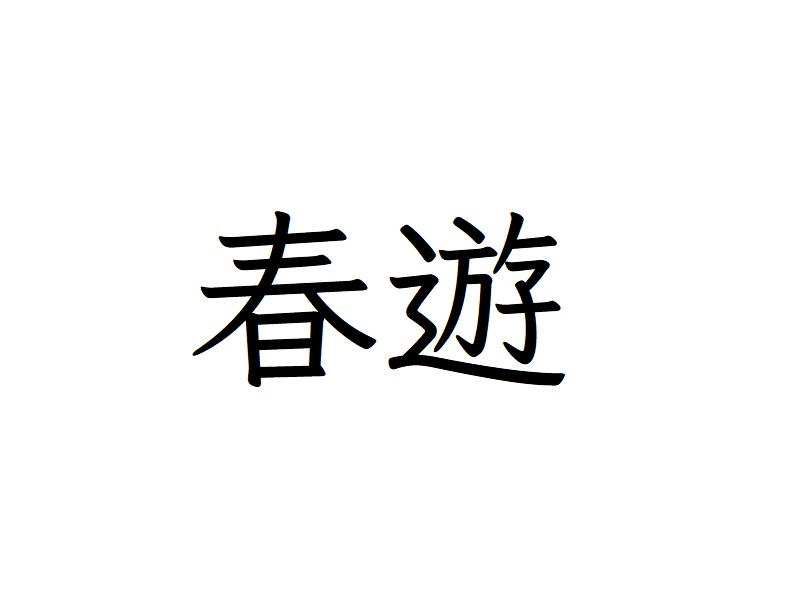
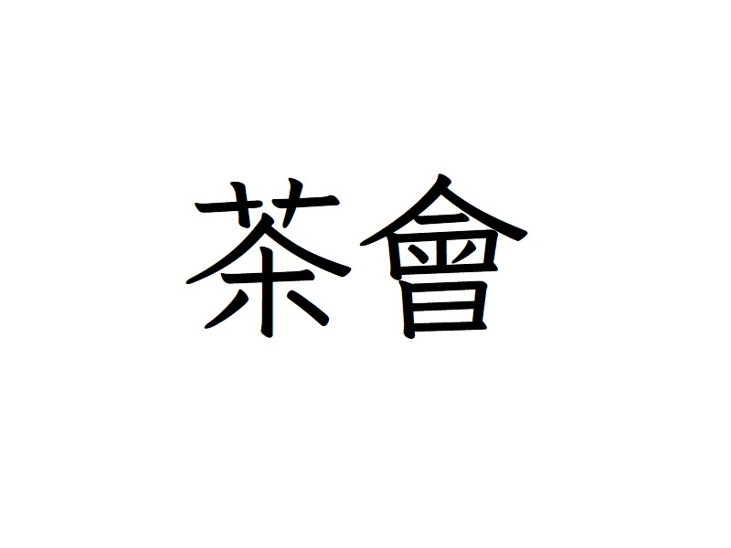
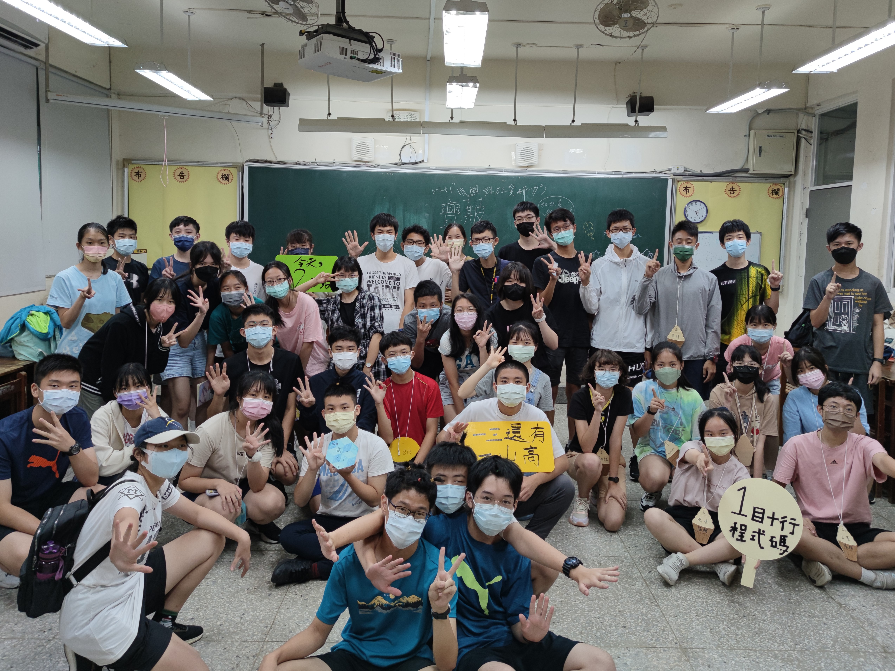
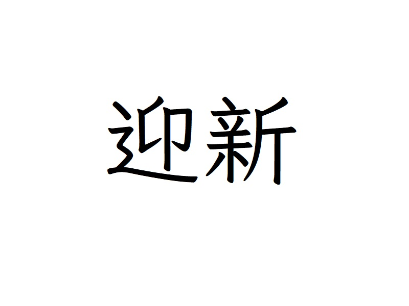
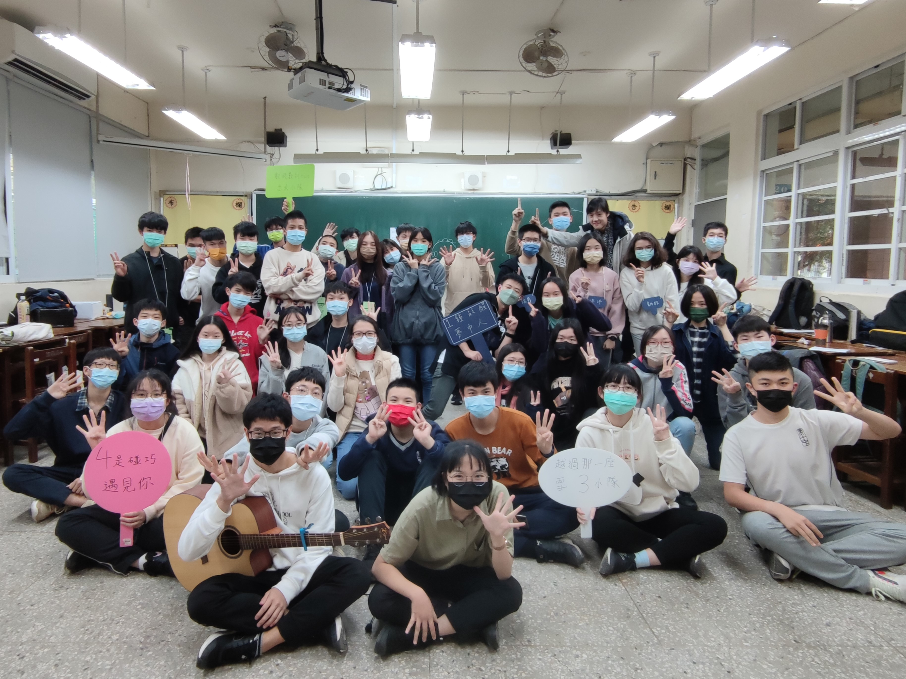

現存活動

2023聯合春遊
春遊
舉辦時間：四～五月建北電資聯合春遊，簡稱春遊。這個活動是高一學弟妹的第一個任務，除了體驗幹部生活，也能與同屆增進感情。

茶會
舉辦時間：七月茶會中，我們廣邀各校同學來參加。要告訴他們，我們上幹了！這也是建北電資主要的外交活動。歡迎大家一起來喝茶！

2022聯合暑訓
暑訓
舉辦時間：七～八月建北電資聯合春遊，簡稱暑訓。這個活動是幹部接幹後辦的第一個大型活動，更是附有讓學弟妹認識我們的任務。活動內教授基本資訊技能、程式語言等，也安排許多增進感情的活動。現今英文名稱 Summer Camp 取自夏令營，代表了暑訓的可玩性。以前暑訓曾被稱為 Summer Train，更有訓練之意涵。

迎新
舉辦時間：九月加入社團，同屆們不見得有時間認識彼此，透過迎新，一定會對社團運作與身邊的朋友更了解的！這次也是學長姊認識學弟妹的一個好機會。近年來，有一說是秋遊是建北電資的正式迎新。但是考證結果認為以前的建北電資是以獨立的方式舉行迎新。

2022聯合秋遊
秋遊
舉辦時間：十～十一月建北電資聯合秋遊，簡稱秋遊。秋遊是正式社員會參加的第一個活動。近年秋遊皆舉辦烤肉活動，已經快變成習俗了！

2023聯合寒訓
寒訓
舉辦時間：一～二月建北電資聯合寒訓，簡稱寒訓。這將是學長姊們最後一個舉辦的大型活動，在寒訓間，會安排幾個神秘活動，到最後你一定會帶著感動的心回到溫暖的家中。